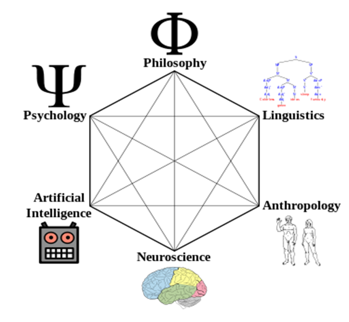

Cognitive Science Program at Queen's UniversityAt Queen's University the Cognitive Science Program is offered by the School of Computing. It is an Honors Subject of Specialization degree program, which specifies courses from a variety of disciplines including School of Computing, Psychology, Linguistics, Philosophy and Neuroscience. Students choose two of the three option areas from Philosophy, Psychology and Linguistics and complete 120 units (54 units of mandatory or core courses + 42 units from defined option areas + 24 units of elective courses) of course work to complete the degree requirements. As a part of the final year capstone project, students choose a research topic in cognitive science and a supervisor from any of the related disciplines to work with for one term.Contact: Farhana Zulkernine, Coordinator, Cognitive Science Program Important Information: |
 |
Upcoming Events
Name
Location | Time